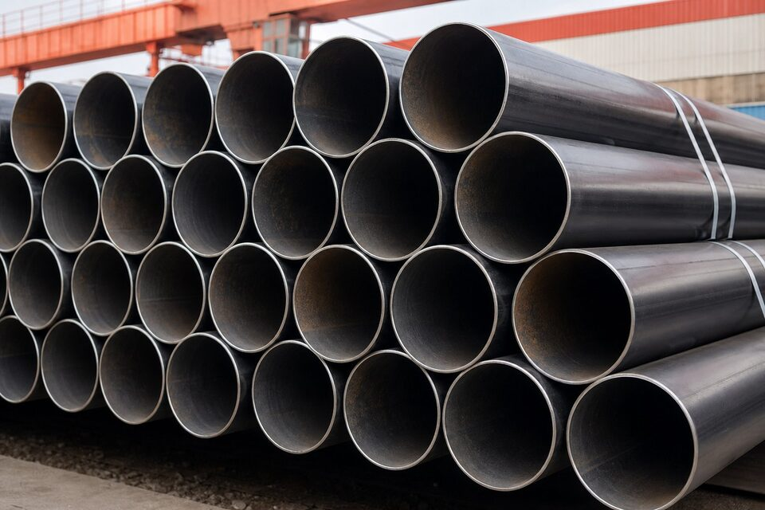

فلسفه دو استاندارد
استاندارد (ASTM A106) مشخصات لولههای فولاد کربنی بدون درز را برای سرویس دمای بالا تعریف میکند؛ این لولهها در پایپینگ فرایندی پالایشگاهها، نیروگاهها و صنایع شیمیایی کاربرد دارند و گریدهای آن بر اساس ترکیب شیمیایی و خواص مکانیکی دستهبندی میشوند. در مقابل، (API 5L) استاندارد انستیتو نفت آمریکا برای لولههای خطوط انتقال است و هم لوله بدون درز و هم درزدار را با گریدهای متنوع از مقاومتهای معمولی تا بالا پوشش میدهد. این تفاوت فلسفه، یعنی دو استاندارد برای دو دنیای متفاوت ساخته شدهاند: یکی برای شبکه مویرگی پایپینگ فرایندی با تمرکز بر دما، و دیگری برای شریانهای خطوط انتقال با تمرکز بر فشار و استحکام. شناخت این تمایز، پایه هر مقایسه و تصمیم خرید درست است.

گریدها و مشخصات مکانیکی
در خانواده (A106)، گرید (B) رایجترین انتخاب برای سرویسهای عمومی است و استحکام کششی و تسلیم مشخصی دارد؛ گریدهای دیگر برای کاربردهای خاصتر عرضه میشوند. در خانواده (API 5L)، گریدها با پیشوند (X) و عدد حداقل استحکام تسلیم بیان میشوند و طیف گستردهای از مقاومتها را شامل میشوند؛ هرچه گرید بالاتر، استحکام بیشتر و در بسیاری موارد الزامات سختگیرانهتر جوشکاری و آزمون نیز بیشتر. این تنوع گرید در (API 5L) به طراحان اجازه میدهد ضخامت دیواره را بهینه کنند و در خطوط انتقال طولانی، وزن و هزینه را کاهش دهند. در پایپینگ فرایندی اما، انتخاب معمولا محدودتر و مبتنی بر کلاس پایپینگ پروژه است. مقایسه عددی استحکام گریدهای دو خانواده باید همیشه با در نظر گرفتن الزامات کد حاکم انجام شود، نه صرفا بر اساس اعداد اسمی.
الزامات آزمون و ساخت
- روش ساخت: (A106) بدون درز است؛ (API 5L) هم بدون درز و هم روشهای درزدار را پوشش میدهد.
- آزمون هیدرواستاتیک: در هر دو خانواده الزامی است اما پارامترها بر اساس استاندارد متفاوتاند.
- آزمونهای غیرمخرب: محدوده و نوع آن در خطوط انتقال معمولا گستردهتر است.
- آزمونهای مکانیکی: کشش، ضربه و در گریدهای خاص، آزمونهای تکمیلی.
- گواهی متریال: سطح گواهی بر اساس الزامات پروژه و کد حاکم تعیین میشود.
یکی از تفاوتهای عملی مهم، سطح الزامات آزمون در خطوط انتقال است: به دلیل طول زیاد خط و فشار کاری بالا، کنترل کیفیت ساخت لولهها با سختگیری بیشتری انجام و آزمونهای غیرمخرب بیشتری اعمال میشود. در مقابل، لولههای پایپینگ فرایندی پس از ساخت خط و در قالب تست هیدرواستاتیک کل خط آزمون میشوند. این تفاوت به معنای برتری یکی بر دیگری نیست، بلکه بازتاب فلسفه هر کاربرد است. برای خریدار، معنای عملی این است که در استعلام، الزامات آزمون موردنیاز پروژه را صریح ذکر کند و به پیشفرضهای فروشنده اکتفا ننماید.
قابلیت جایگزینی و ملاحظات کد
پرسش رایج بسیاری از خریداران این است که آیا در یک پروژه میتوان به جای (A106) از (API 5L) یا برعکس استفاده کرد. پاسخ کوتاه: فقط با ارزیابی مهندسی و تایید مرجع پروژه. کدهای پایپینگ فرایندی، لولههای مجاز خود را فهرست میکنند و کدهای خطوط انتقال نیز مراجع مستقل خود را دارند؛ بنابراین جایگزینی خودسرانه میتواند به عدم انطباق در بازرسی منجر شود. از نظر فنی نیز تفاوتهایی در ترکیب شیمیایی، الزامات ضربه و رفتار جوشکاری گریدهای مختلف وجود دارد که باید بررسی شوند. در پروژههای نوسازی که مدارک اولیه ناقص است، تعیین دقیق جنس لوله موجود با مدارک یا آزمون، پیششرط هر تصمیم جایگزینی است. تجربه نشان میدهد هزینه یک ارزیابی مهندسی، در برابر ریسک رد اقلام در بازرسی ناچیز است.
راهنمای عملی خرید
هنگام استعلام لوله، استاندارد و گرید دقیق، نوع ساخت، سایز اسمی و ضخامت دیواره، طولهای موردنیاز و الزامات آزمون و گواهی را ذکر کنید. اگر پروژه کلاس پایپینگ دارد، به جای حدس زدن مشخصات، مستقیما به کلاس ارجاع دهید تا فروشنده بر اساس همان پیشنهاد دهد. در مقایسه پیشنهادهای دریافتی، فقط قیمتها را نبینید: سطح گواهی متریال، سوابق سازنده در گرید موردنظر و زمان تحویل واقعی نیز باید وزن داده شوند. برای سفارشهای بزرگ، بازرسی حین ساخت و آزمونهای شاهد نیز در قرارداد دیده شوند. و در نهایت، اگر پیشنهاد جایگزینی گرید دریافت کردید، آن را مکتوب به مهندسی پروژه ارجاع دهید و پاسخ رسمی بگیرید.
جمعبندی
لولههای (A106) و (API 5L) هر دو ستونهای بازار لوله فولادیاند اما برای کاربردهای متفاوتی بهینه شدهاند. با شناخت فلسفه هر استاندارد، دقت در گریدها و الزامات آزمون و پرهیز از جایگزینی بدون تایید مهندسی، خریدی منطبق با کد حاکم و قابل دفاع در بازرسیها خواهید داشت.
سوالات رایج
کاربرد اصلی هر استاندارد چیست؟
(ASTM A106) برای لولههای بدون درز فولاد کربنی در سرویس دمای بالای فرایندی طراحی شده و (API 5L) استاندارد اصلی لولههای خطوط انتقال نفت و گاز با گریدهای مقاومت بالاتر است.
آیا این دو لوله به جای هم قابل استفادهاند؟
در برخی سرویسهای عمومی ممکن است مشخصات نزدیک باشند، اما جایگزینی باید با ارزیابی مهندسی و تایید کد حاکم پروژه انجام شود؛ کدهای پایپینگ و خطوط انتقال هرکدام مرجع خود را دارند.
مهمترین تفاوتهای فنی کداماند؟
محدوده گریدها و استحکام، الزامات آزمونهای غیرمخرب و فشار، روشهای ساخت مجاز و فلسفه طراحی؛ (API 5L) بر خطوط انتقال با فشار کاری بالا و (A106) بر سرویس فرایندی دما بالا تمرکز دارد.
در استعلام خرید چه اطلاعاتی لازم است؟
استاندارد و گرید، نوع ساخت، سایز اسمی و ضخامت، الزامات آزمون و گواهی متریال؛ ذکر ناقص هرکدام میتواند به تحویل کالای نامتناسب منجر شود.
مطالب مرتبط
تامین لوله بدون درز و درزدار مطابق (ASTM) و (API) با گواهی متریال معتبر.
مشاهده صفحه محصول ← ثبت RFQ همین محصولتامین این تجهیزات را به پیشرو تجهیز فرتاک بسپارید
شرکت پیشرو تجهیز فرتاک تامینکننده تخصصی تجهیزات صنعتی برای پروژههای نفت، گاز، پتروشیمی، فولاد و نیروگاهی است. برای دریافت پیشنهاد فنی و قیمت، استعلام (RFQ) خود را ثبت کنید تا کارشناسان مهندسی فروش در کوتاهترین زمان پاسخ دهند.
- تامین تجهیزات صنایع نفت و گازپکیج مواد مطابق وندورلیست
- تامین تجهیزات پتروشیمیاقلام مکانیکال و ابزار دقیق